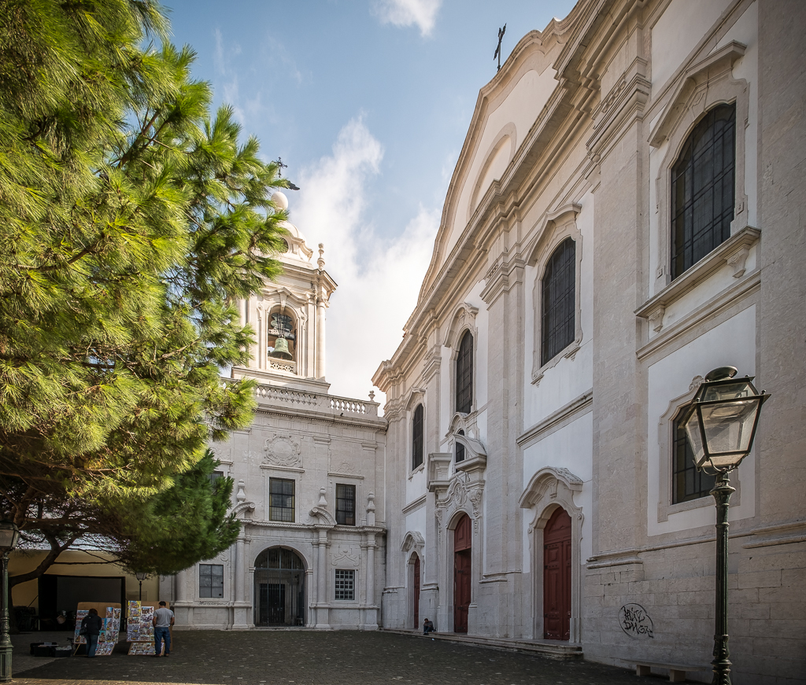
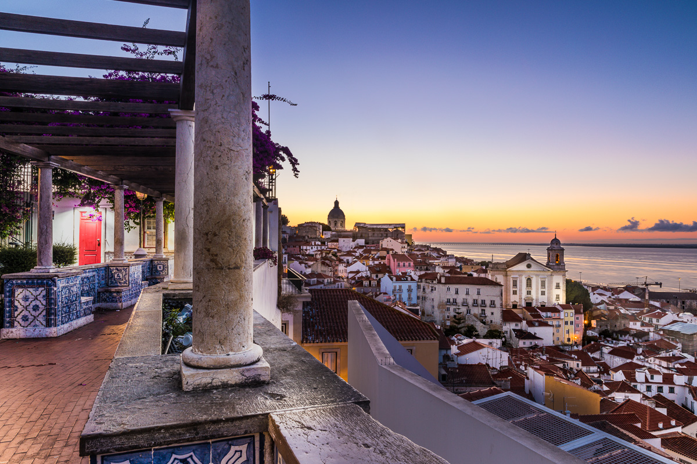
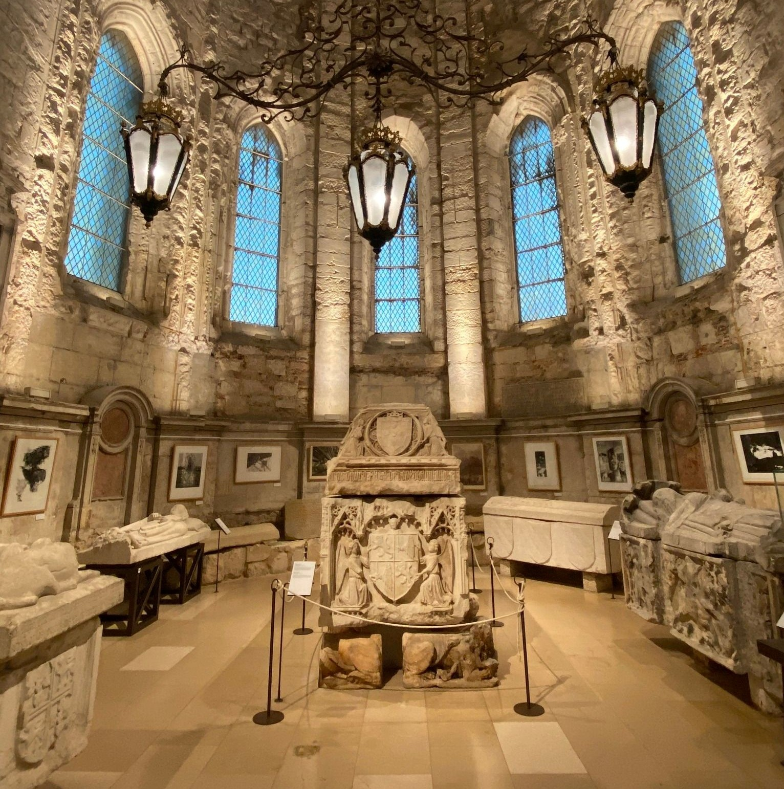

Igreja da Graça
O Convento da Graça é um dos mais imponentes conjuntos conventuais de Lisboa, as suas origens remontam a meados do ano 1271.
A Igreja da Graça, também conhecida como Igreja de Nossa Senhora da Graça, é um exemplo notável da arquitetura barroca em Lisboa.
Com sua fachada ornamentada e interior ricamente decorado, a igreja é um local de culto ativo e um ponto turístico popular.
Os visitantes podem admirar os altares esculpidos, as pinturas e os azulejos que adornam o interior da igreja.

Miradouro de Santa Luzia
O Miradouro de Santa Luzia tem uma ampla vista sobre Alfama e o rio Tejo.
É um dos miradouros mais populares de Lisboa, oferecendo uma vista deslumbrante da cidade e do rio.
Com seus azulejos coloridos e jardins bem cuidados, o miradouro é um local perfeito para relaxar e apreciar a beleza de Lisboa.
Os visitantes podem desfrutar de uma vista panorâmica da cidade, das colinas e do rio Tejo, tornando-o um local ideal para fotos e contemplação.

Museo do Carmo
O Convento do Carmo de Lisboa é um antigo convento da Ordem dos Carmelitas da Antiga Observância que se
localiza no Largo do Carmo e foi erguido, sobranceiro ao Rossio. O Museu do Carmo é um museu localizado no antigo convento do Carmo, que abriga uma coleção de arte sacra e artefatos históricos.
O museu é conhecido por sua arquitetura gótica impressionante e por abrigar o famoso ossuário, que exibe os ossos de monges carmelitas.
